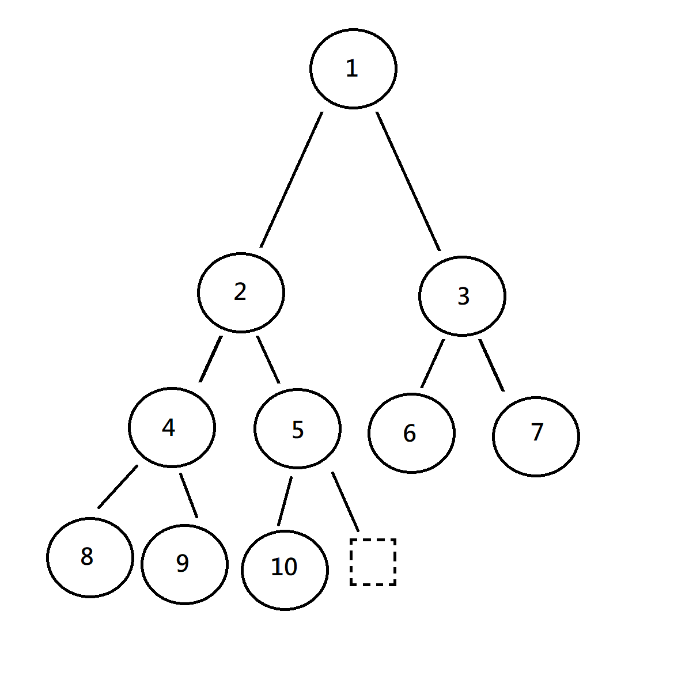

Heap
Heap 是一種 Data Structure ，要符合 Heap Condition (or Heap Property)
Heap property 是指 parent 和 children 的關係 (但 children 之間順序無關)
- Min Heap : parent <= children
- Max Heap : parent >= children
Heap 有一些不同的實作方法，如果只有寫 Heap，通常都是指 Binary Heap
其他種類如: Binomial Heap ， Fibonacci Heap ， Pairing Heap 等，參考 wiki Heap
(Binary) Heap
Heap 是一種 Binary Tree，不過要符合2個條件 :
- 外觀是 Complete Binary Tree
- 裡面元素都要符合 Heap Condition
雖然 Heap 在觀念上是一個 Complete Binary Tree ，但實際上是用 array 去 implement
這樣就能快速地去存取父(子)節點
node 的 index 是 i
- parent : i / 2
- left child : i * 2
- right child : i * 2 + 1
Heap 的 push 為 O(log2 N)，pop 為 O(log2 N)
Priority Queue
Priority Queue 是一種 Abstract Data Structure，也是一種 container
當要從 Priority Queue 取出一個元素時，他會回傳最高優先度的元素並移除它
並可以 change 某元素之優先度，當然其位置也會改變
可以使用不同的 Data Structure 去 implement
舉一些例子 : [ search 表示搜尋時間 ，已知位置為 O(1)，否則為該 search 欄位時間 ]
| insert | remove | change | isEmpty | search | |
|---|---|---|---|---|---|
| unsorted array | O(1) | O(n) | srch+O(1) | O(1) | O(n) |
| sorted array | O(n) | O(n) | O(n) | O(1) | O(log2 n) |
| circular sorted array | O(n) | O(1) | O(n) | O(1) | O(log2 n) |
| unsorted linked list | O(1) | O(n) | srch+O(1) | O(1) | O(n) |
| sorted linked list | O(n) | O(1) | O(n) | O(1) | O(n) |
| Binary Heap | O(log2 n) | O(log2 n) | O(log2 n) | O(1) | O(log2 n) |
其中 Binary Heap 所花費的時間較為平均，O(1) < O(log2 n) < O(n)
當然還有更快的作法，指示使用 Binary Tree 較為常見
有時也會稱 Priority Queue 為 Heap
快速建立 Binary Heap 或 PQ
假設要建立 Min Heap
給定一個隨機數值的 array ，將所有有 child 的 node (也就是subtree) 做 bulidMinHeap
直到所有subtree皆完成，就建立完成了

例如給定一個有 10 個 node 的 tree ，最後一個有 child 的 node 為 10/2 = 5
因此從 index=5 開始做 MinHeap
5 -> 4 -> 3 -> 2 -> 1
就完成了
費時 :
- level 3 -> 耗時 1 (向下比較1次) * 2 個 = 2
- level 2 -> 耗時 2 (向下比較2次) * 2 個 = 4
- level 1 -> 耗時 3 (向下比較3次) * 1 個 = 3
- total = 9
共有 log2N+1 = k 層 (假設為 Full Binary Tree)
( Mi : 第 i 層有 $ \frac{N}{2^{k-i}} $ 個元素 )
- level k-1 -> 耗時 : $ 1 \times M $k-1 = $ 1 \times \frac{N}{2^1} $
- level k-2 -> 耗時 : $ 2 \times M $k-2 = $ 2 \times \frac{N}{2^2} $
- level k-3 -> 耗時 : $ 3 \times M $k-3 = $ 3 \times \frac{N}{2^3} $
。
。
。 - level 1 -> 耗時 : $ (k-1) \times M $1 = $ (k-1) \times \frac{N}{2^{k-1}} $
Total time = $ \sum\limits_{i=1}^{k-1}i \times \frac{N}{2^{k-i}} = \frac{N}{2} + \frac{2N}{4} + \frac{3N}{8} + \frac{4N}{16} …$
耗時 = O(N)
Binary Heap 實作
首先設一個依據 Heap property 比較大小的 function
1 | // Min Heap |
然後在寫 heap_down(向下比較) 與 heap_up(向上比較)
1 | void heap_down(int up) |
接下來就可以去實作 快速建立Heap 、push(insert) 、pop(delete)
快速建立Heap
利用上方 #3 介紹的概念
1 | void build(void) |
push(insert)
1 | void push(const T &input, const int key = 0) |
pop(delete)
1 | void pop(void) |
參考網站